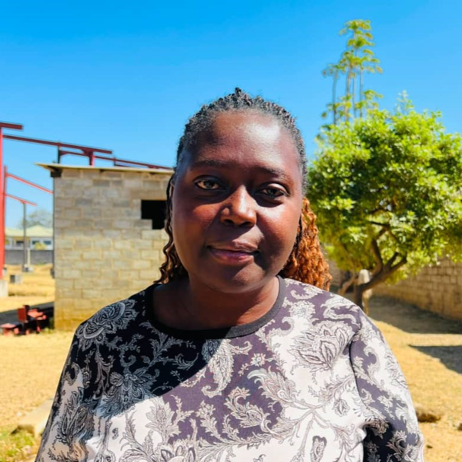

Department Leader
Bester Zandonda
Health Ministries Coordinator
What This Ministry Does
Health Ministries exists to help our church family and community live well in every sense — physically, mentally, and spiritually. We believe caring for the body is part of caring for the whole person, and we put that into practice through education, screenings, and simple lifestyle support that anyone can act on.
Whether it's a cooking class, a blood pressure check after service, or a walking group on Sabbath afternoon, this ministry meets people where they are and helps them take one healthy step at a time.
Activities & Programs
- Free blood pressure and blood sugar screenings after Sabbath service
- Plant-based cooking demonstrations and healthy-eating workshops
- Community walking and fitness sessions
- Mental wellness talks and stress-management resources
- Guidance on temperance — avoiding harmful substances and habits
Want to Get Involved?
Reach out to the department leader directly to join a screening day, cooking class, or wellness program.